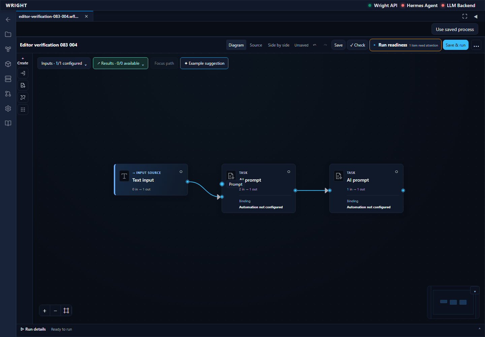
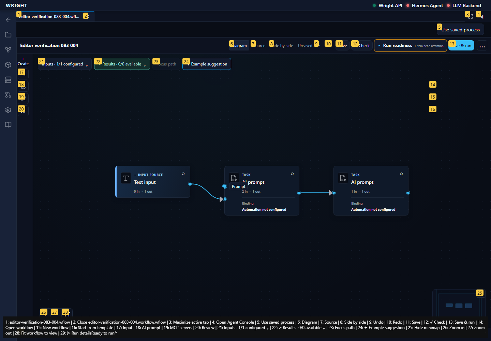

Continue the newly saved scratch workflow through type rejection, layout persistence, zoom and concurrent-save protection. No process execution or engineering review.
Status: blocked
First unexpected state retained; no execution or review submitted.
Expected: Editor action succeeds without guesses or workarounds.
Actual: expect(locator).toBeVisible() failed Locator: locator('[data-testid="retained-workspace-workflow-panel"][aria-hidden="false"]').getByRole('status').filter({ hasText: /type|accept|compatible/i }) Expected: visible Timeout: 5000ms Error: element(s) not found Call log: - Expect "to.be.visible" with timeout 5000ms - waiting for locator('[data-testid="retained-workspace-workflow-panel"][aria-hidden="false"]').getByRole('status').filter({ hasText: /type|accept|compatible/i })
raw 
annotated 